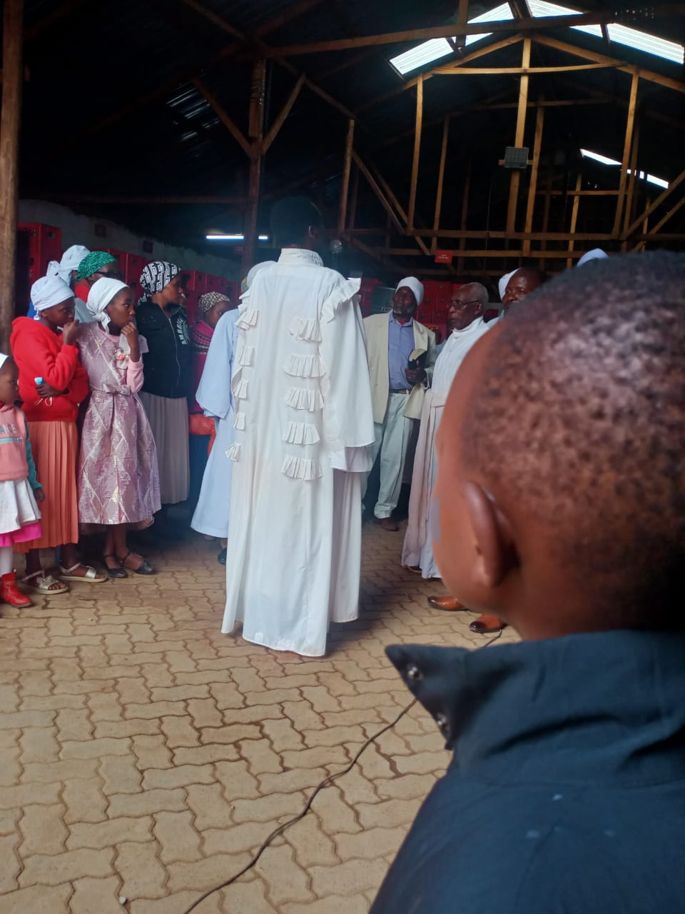

Welcome Home
Holyways Mission Church is a Christ-centered church located in Muchatha, Kiambu County. We are committed to spreading the Gospel, nurturing believers, serving communities, and raising disciples for the Kingdom of God.
Learn More
Holyways Mission Church is a Christ-centered church located in Muchatha, Kiambu County. We are committed to spreading the Gospel, nurturing believers, serving communities, and raising disciples for the Kingdom of God.
Learn More
Rooted in Scripture, prayer, and loving service to the community.
To proclaim the Gospel of Jesus Christ, disciple believers, and transform lives through the power of God's Word.
To be a vibrant church that impacts communities through worship, prayer, discipleship, and compassionate service.
Serving the church family with faith, care, and spiritual guidance.

Senior Pastor

Senior Pastor & Mrs Bishop

Mrs Bishop
Places to grow, serve, worship, and walk together in faith.
Guiding children in the love and truth of Christ.
Building young disciples with purpose and courage.
Encouragement, prayer, and service among women.
Leading the church in heartfelt praise and worship.
Standing together in intercession and thanksgiving.
Serving families and neighbors with compassion.
Moments from worship, fellowship, baptism, prayer, and celebration.



Selected moments from church services and ministry gatherings.
Join us for fellowship, worship, seminars, and church gatherings.
MRS Bishop Benjamin Kawaida Home
Kawaida Church
Kawaida Church
Late Stanley Rukubi Home
Venue To Be Communicated
Kamirithu Church
Muchatha Church
Monicah Wabui Gataka Home
Muchatha Church
We would be glad to welcome you, pray with you, or help you find us.
Phone: 0789530559 or 0722530559
Email: petermuiru@gmail.com
Location: Muchatha, Kiambu County, Kenya
Get Directions